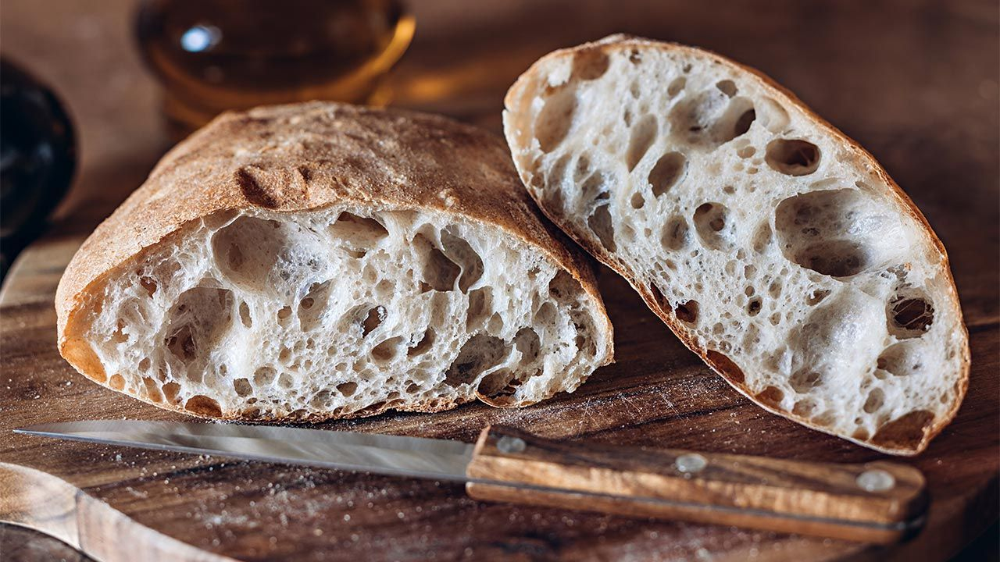

Bread

Bread Beginners Start Here
Have you ever wanted to master homemade bread? Real, crusty, chewy, delicious bakery-style loaves that taste incredible with dips, soups, sauces, and comforting dinners? This recipe is where you start. This artisan bread is for beginners, but even bread masters will appreciate its flavor and ease. It's so fresh, so flavorful, and so surprisingly easy because it basically makes itself.
You only need 4 ingredients without any special pans or mixer, there's no kneading, no poolish or dough starter required, and you can add herbs, cheeses, and spices to make a variety of bread flavors.
This base recipe will soon be on repeat in your kitchen. After you realize how easy it is to make real homemade bread, you'll find any excuse to bake a loaf.
INGREDIENTS
- Bread Flour: While you can use all-purpose flour in this recipe, I strongly recommend using bread flour. Just like when we make olive bread, bread flour produces a stronger, chewier bread and that makes a big difference in recipe with only 3 other ingredients.
- Instant Yeast: Instant yeast is key in this recipe. While you can use active dry if that's all you have, any quick rise or instant yeast will produce flavorful results in less time. I use more yeast in this recipe compared to my cranberry nut no-knead bread and no-knead jalapeño cheddar bread. Why? Those doughs rest and rise at room temperature. However, for more flavor and just as much rise, I use more yeast and let the this dough rest in the refrigerator. (Cool air slows the fermentation process.)
- Salt: You can't make good bread without salt and for best flavor, I recommend a coarse salt, such as coarse sea salt. I find the bread's flavor lacking with regular table salt.
- Water: I normally encourage you to use warm liquid with yeast because warm liquid helps the yeast work faster. However, use cool or room temperature water here. Not freezing cold, not super warm-cool to touch. 70°F (21°C) is great, but the exact temperature doesn't matter as long as it's not hot or warm. The cooler the water, the longer the dough takes to rise and, usually, the better the bread's flavor. (This is important since there are so little ingredients to add substantial flavor!) We use the same cool water method for no knead honey oat bread.
- Optional Cornmeal: Dusting the pan with cornmeal adds a pop of flavor and a little crunch to the bottom crust. This is completely optional. If you have it, use it. If you don't have it, don't worry about it.
INSTRUCCIONS
- Mix the dough ingredients together. At first the dough will seem very dry and shaggy and you'll question if it will even come together. But it will. Use a spatula at first, then switch to your hands to ensure all of the flour is moistened. The dough is actually a little sticky after it's thoroughly mixed.
- Let it rise at room temperature for 2-3 hours. Cover the dough and let it rise at room temperature for about 2-3 hours until doubled in size.
- Use right away or refrigerate. After 2-3 hours, you can immediately continue with the next step. However, for ideal flavor and texture, I strongly recommend letting the dough sit in the refrigerator for at least 12 hours and up to 3 days. Yes, 3 full days! I usually only let it rest for about 18 hours. During this crucial step, the cold air slows the fermentation process and adds so much flavor and texture. So, you can bake bread in 2-3 hours or in 3 days. The longer it sits, the better it tastes.
- Shape into 2 loaves or 1 boule. Rest as oven preheats. You can shape the bread into a round loaf (boule) or two longer loaves. I usually make 2 longer loaves side-by-side on a flat baking sheet, about 9x3 inches each. Score with a sharp knife or bread lame. Preheat the oven to a very hot 475°F (246°C). The extremely hot air will immediately set the crust so the bread rises up instead of spreading all over. To help ensure a crispier crust, after the oven pre-heats pour boiling water into a metal or cast iron baking pan/dish on the bottom oven rack. Immediately place the dough inside and shut the oven door to trap the steam. The steam will help create that coveted crisp crust. If you have a dutch oven, shape the dough into 1 round loaf, and bake it inside the dutch oven with the lid on.
- Bake until golden brown, about 20-25 minutes. Gently tap the loaves because if they sound hollow, they're done.